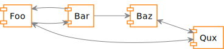
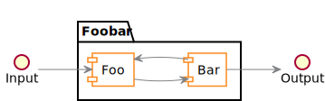
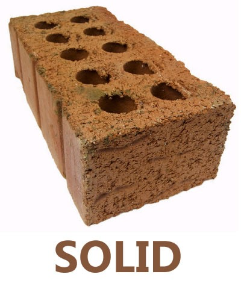
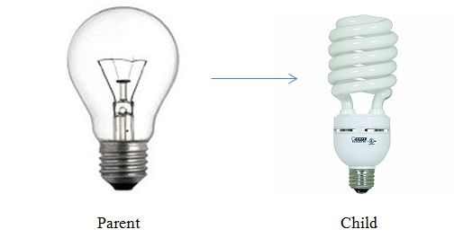
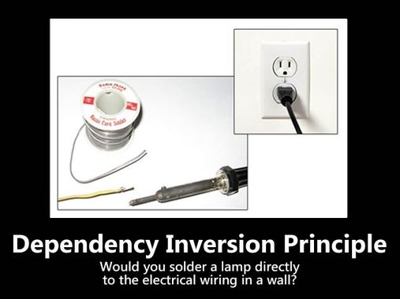
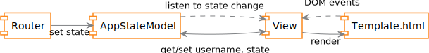
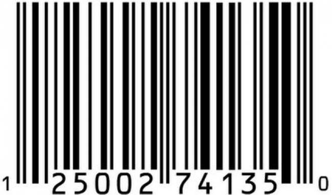
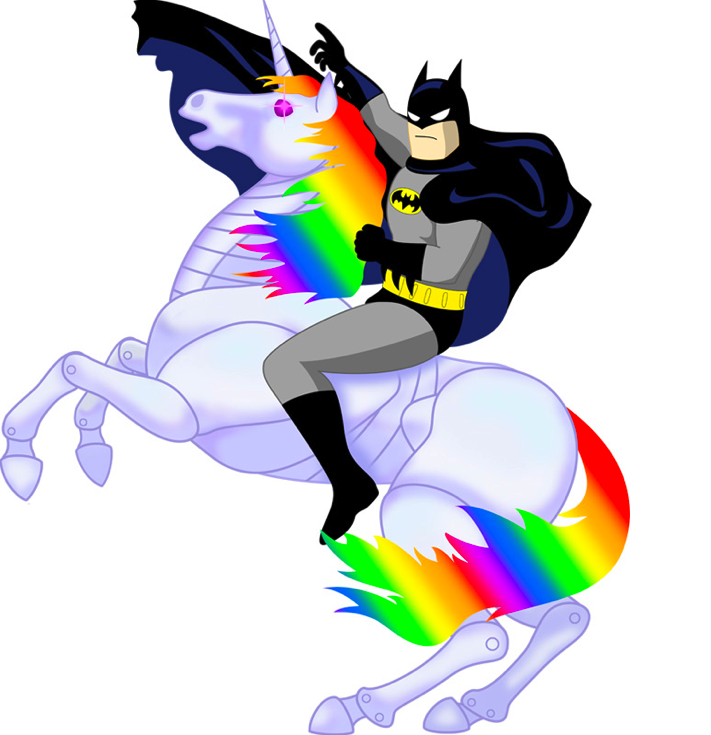

Андрей Прокопюк, Яндекс
Андрей Прокопюк,
Разработчик интерфейсов

Компонент в изоляции
Изолируем подсистему


В первую очередь следует принципам SOLID
Но не только это
Single responsibility principle — принцип единственной ответственности
$ ls
Gruntfile.js LICENSE README.md andre.life.iml build
node_modules package.json scripts src
$
Open/closed principle — принцип открытости/закрытости
Liskov substitution principle — принцип подстановки Барбары Лисков
Liskov substitution principle — принцип подстановки Барбары Лисков

Interface segregation principle — принцип разделения интерфейса
class Tiger implements FourLegged, Yellow, BlackStrips, Mustaged, ...
Dependency inversion principle — принцип инверсии зависимостей

Код библиотечного метода
Расширяем на проекте, вместо b-icon — image. Найдите 2 отличия
Как поправить дело? Писать короткие методы с единственным действием
_getImages: function () { // Легко переопределить на image
return this.findBlocksInside('b-icon')
},
_checkImageCompleted: function (image) {
var promise = $.Deferred()
image.bindTo('load error', promise.resolve)
return promise
},
_checkAllImagesCompleted: function (images) { // Легко тестировать
return $.when.apply($, images.map(this._checkImageComplete))
}
Изменили поведение базового компонента
Как так получилось?
/* components-common/foo-base.js */
export default {
aggregate(list) { return list.reduce(this.op, this.start()) },
op(x, y) { return x + y },
start() { return 0 }
}
/* components-touch/foo-touch.js */
import foo from 'foo-base'
foo.op = (x, y) => x * y
foo.start = () => 1
export default foo
Как поправить дело? Вариант 1, наследование
/* components-common/foo-base.js */
export default class FooBase {
aggregate(list) { return list.reduce(this.op, this.start()) }
op(x, y) { return x + y }
start() { return 0 }
}
/* components-touch/foo-touch.js */
import FooBase from 'foo-base'
export default class FooTouch extends FooBase {
op(x, y) { return x * y }
start() { return 1 }
}
Как поправить дело? Вариант 2, копирование
/* components-common/foo-base.js */
module.exports = {
aggregate: function (list) { return list.reduce(this.op, this.start()) },
op: function (x, y) { return x + y },
start: function () { return 0 }
}
/* components-touch/foo-touch.js */
var FooBase = require('foo-base')
module.exports = $.extend({}, FooBase, {
op: function (x, y) { return x * y },
start: function () { return 1 }
})
class Controller() {
constructor({ Model, View }) {
this.model = new Model()
this.view = new View()
this.bindEvents()
}
bindEvents() {
this.view.on('formSubmitted', this.model.setData)
this.model.on('change', this.view.render)
}
onMounted() {
this.view.render()
}
}
describe('Controller', function () {
beforeEach(function () {
this.params = {}
this.params.Model = FakeModel.createClass()
this.params.View = FakeView.createClass()
})
it('should render view when data changed', function () {
new Controller(this.params)
this.params.Model.emit('change')
assert.calledOnce(this.params.View.render)
})
})



Чтобы писать много хороших и надежных тестов —
нужно придать коду приложения
тестируемый дизайн
SOLID
Полный код примеров:
Вопросы?
Нужно следовать SOLID